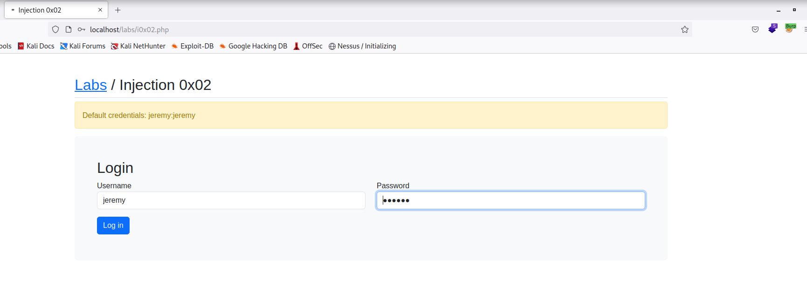

First will start the lab up from the docker:
to run the docker in the background than just add -d in the end.
sudo docker-compose up
Open Web-browser
http://localhost
As i loggined in accidently and haven't started the foxy proxy so even though my burp suite was running i was not able to get the post request
Mentor will introdue BurpSuite and Sqlmap and when as well as how to use it's feature
Will set foxy-proxy as well as the proxy in the Burpsuite to
127.0.0.1 and port 8080
Solution: clear the history along with the cache and cookies


Will send the request to the repeater using ctrl + r
What repeater does ?_?
we can simply modify the request what we are sending and simply compare other responses.
As we put wrong password we can see that it generated error (i.e. change in content lenght) and also we viewed in render in response code

Than will try username = jeremy' or 1=1#
but will encode it using ctrl + u
username=jeremy'+or+1%3d1%23%26password=password
Now we are in a tricky situation so let's see if we can automate this task and find the sql injection.
On a live target Mentor says to reduce the number of requests as will get limited request like 3 to 5.


Now we have a choice do we go back to manual testing ?_?
Do we try and download a list of payloads and try and fuzz it overselves ?_?
This application must be processing this cookie so whenever you think about SQL Injection think everything you're supplying to the application and how it might be used.


Cookie: session=6967cabefd763ac1a1a88e11159957db' and 1=1#;
So long story short we are able to manupilate the cookie and got the same response for the content length i.e. 1027 which is an indication for SQL injection.